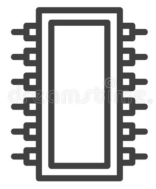

First steps in bare-metal programming using UEFI – part 5

This series of articles describes how to start writing bare-metal programs for modern PCs, using Linux as the development platform. By “bare metal” I mean without any operating system: the application will be run directly by the computer’s EFI firmware, at boot time.
This article is about using EFI’s Simple File Protocol to read and write files, and to query storage volumes. There is, of course, outline code in the text, but you’ll find a complete, bootable example in my GitHub repository.
Basic principles
Please don’t skip this section, and go straight to the code. I’ve learned the hard way that it’s difficult to understand how the EFI file API works without knowing the principles it’s based on. This theory is both dry and non-straightforward, but it’s essential.
Handles, GUIDs, and protocols
These are key concepts in EFI programming.
Everything in EFI is defined by a handle. A handle is a scalar quantity which is, in practice, a pointer to a data structure of some kind. This use of the term “handle” is radically different from its use in traditional C programming; a “file handle”, for example, is an opaque integer. This integer has no function other than to identify a file in subsequent function calls.
In EFI, though, a handle points to a structure containing function
pointers. Consider, for example, EFI_FILE_HANDLE, which
we’ll use extensively later. This handle represents a file or directory,
and gnu-efi defines it like this:
typedef struct _EFI_FILE_HANDLE {
EFI_FILE_OPEN Open;
EFI_FILE_CLOSE Close;
...
} EFI_FILE_PROTOCOL, *EFI_FILE_HANDLE;Open, Close, etc., are pointers to
functions that do the real work in EFI. We can call these functions from
the handle.
Sometimes we use EFI_FILE_HANDLE exactly like a C
library file handle – we get it from one function call, pass it in
another. On other occasions we’ll call its actual methods.
Because an EFI handle is a pointer to a data structure, that
structure might be dynamically allocated, and need to be freed
by the caller. Neither the UEFI specification, nor the
gnu-efi documentation, clarify when this is necessary. My
approach to managing this situation is to call FreePool()
on every handle returned by a function call, and change it if the
program crashes. Not very satisfactory, I appreciate.
Associated with each handle is a protocol. A protocol is also a data structure containing a bunch of function pointers and may, in some cases, match the handle that provided it. However, a particular handle may expose multiple protocols.
Each protocol is identified by a GUID – a globally-unique ID. Given a handle, we can get a specific protocol using EFI’s Boot Services facility. For example, we’ll get the Simple File Protocol from a device handle (more on this later) with a call like this:
EFI_GUID sfp_guid = EFI_SIMPLE_FILE_SYSTEM_PROTOCOL_GUID;
EFI_SIMPLE_FILE_SYSTEM_PROTOCOL *sfp;
EFI_HANDLE device_handle = ...;
boot_services->HandleProtocol (device_handle, &sfp_guid, (void **)&sfp); Unfortunately, for our program to be portable, we need to write this last line differently:
uefi_call_wrapper (boot_services->HandleProtocol,
3, device_handle, &sfp_guid, (void **)&sfp); Note
If you’re unsure whatuefi_call_wrapper()is for, or why this code is so ugly, please look at part 1 again.
The Simple File Protocol
EFI offers various methods for handling data on storage devices. The most flexible is to treat a filesystem as a bunch of disk blocks, and do all the processing programmatically. That’s an awful lot of work, though, if all you want to do is read a configuration file from disk.
For this kind of task, EFI offers the Simple File Protocol.
Remember that a ‘protocol’, in the gnu-efi world, is a data
structure packed with function pointers. These pointers are to the
functions that do the actual work within EFI.
EFI does not offer any kind of unified filesystem – you can’t ‘mount’ a filesystem somewhere, as on Linux. Each filesystem is completely independent, with its own root. It’s entirely possible that each will have its own Simple File Protocol.
EFI is only required to handle a small number of filesystem types and, in practice, the only one you’re likely to use is VFAT (32-bit DOS/Windows FAT). VFAT is an archaic format, completely unsuitable for serious computing in today’s world, but it’s easy to implement. When the computer boots, the EFI firmware will examine the various buses for storage devices, and then find compatible (i.e., VFAT) filesystems on them. EFI makes this information available to the program, by registering a handle that offers the Simple File Protocol (the exact details aren’t important at this stage).
Given the relevant Simple File Protocol we can open the root directory for the volume. With this root directory, we can do two useful things:
- Find information about the volume, such as its capacity
- Open a file, using a pathname relative to the root directory.
You’ll see later that the EFI function that opens a file takes the root directory as an argument – supplying the root directory is how we tell the function which volume we’re working on.
So let’s look at how we implement these steps in C code.
Locating a Simple File Protocol (SFP) for the volume
The first step in handling files on a particular volume is to find the Simple File Protocol structure for that volume. There is a simple way to do this, and a host of complex ways. I’ll deal with some of the complex ways later; for now, we’ll go with the simple way.
In a system with only one useable disk partition, or where we only care about the partition our application booted from, it’s relatively straightforward to find the corresponding Simple File Protocol.
The efi_main function – the entry point to the program –
has a parameter of type EFI_HANDLE, that identifies the
image in memory of the partition that hosts the application. We can’t
work with files in this image directly because, well, it’s in memory,
not a real filesystem. However, we can use the Loaded Image Protocol
(LIP) to get a handle to the device the image came from. From that
device handle we get the SFP for the device itself, rather than the
image. Then from the SFP we can open the root directory of the volume,
as outlined above.
Here’s how we get the SFP for the device we booted from.
EFI_STATUS EFIAPI efi_main (EFI_HANDLE image_handle,
EFI_SYSTEM_TABLE *system_table)
{
...
// Get the device handle corresponding to our application using
// the Loaded Image Protocol
EFI_LOADED_IMAGE *loaded_image = NULL;
EFI_GUID lip_guid = EFI_LOADED_IMAGE_PROTOCOL_GUID;
EFI_STATUS ret = uefi_call_wrapper (BS->HandleProtocol, 3,
image_handle, &lip_guid, (void **) &loaded_image);
// Get the Simple File Protocol from the image's device handle
EFI_GUID sfp_guid = EFI_SIMPLE_FILE_SYSTEM_PROTOCOL_GUID;
EFI_SIMPLE_FILE_SYSTEM_PROTOCOL *sfp;
uefi_call_wrapper (BS->HandleProtocol, 3, loaded_image->DeviceHandle,
&sfp_guid, (VOID*)&sfp);
// Note -- error checking omitted
}Opening the root directory
The Simple File Protocol exposes only one useful function,
OpenVolume, which gives us the handle of the root
directory.
EFI_FILE_HANDLE root;
EFI_STATUS status = uefi_call_wrapper (sfp->OpenVolume, 2, sfp, &root);
...
uefi_call_wrapper (root->Close, 1, root); // Close when doneLike all EFI calls, OpenVolume returns an
EFI_STATUS which is zero on success.
OpenVolume() shouldn’t ever fail, because a partition must
have a root directory, but many EFI calls can fail, so the return values
should really be checked as a matter of course.
EFI_FILE_HANDLE exposes functions for reading and
writing files, but we probably won’t them. Instead, we’ll use the handle
to the root directory to open specific files in the volume.
Opening a file
Now we have a handle to the root directory of a volume, we can open a specific file, like this:
EFI_FILE_HANDLE h;
CHAR16 *path = L"\\path\\to\\my\\file";
UINT64 mode = EFI_FILE_MODE_READ;
uint64 attribs = 0; // Could be, e.g., EFI_FILE_HIDDEN
EFI_STATUS status = uefi_call_wrapper (root->Open, 5, root, &h, path,
mode, attribs);
// Read or write file...
...
uefi_call_wrapper (h->Close, 1, root); // Close when doneHere are a few things to watch out for.
- The path is an array of two-byte Unicode characters
- The path separator is (ugh) a backslash
- The file attributes are generally meaningless for anything except a VFAT filesystem.
If the Open call succeeds, the supplied
EFI_FILE_HANDLE argument is written with a new handle which
we can, in turn, use to read or write the file.
Reading and writing the file
These actions, at least, are straightforward:
int64_t bytes_to_write;
char *buff = ...;
EFI_STATUS err = uefi_call_wrapper (handle->Read, 3, handle, &bytes_to_read, buff);
// Check for errorThe Write call is similar.
On entry to Read, we set bytes_to_read to
indicate the amount of data to read. Read sets this to the
number of bytes it actually read, which will be smaller than the
anticipated amount once we’ve reached the end of the file.
Deleting a file
There is no equivalent of the POSIX unlink function. To
delete a file, we first open it, and then call its Delete
function, just as we earlier called Read on the file. The
gnu-efi documentation says that this also closes the file
handle, but it isn’t clear whether it also frees the associated memory.
So I usually call FreePool on the handle, just in case.
Listing a directory
Space precludes given a full description here – see the sample source
code. Broadly, we open the directory exactly as we opened a file. Then
we read it into a buffer of type EFI_FILE_INFO until no
further data is returned.
EFI_FILE_INFO entry;
int64_t n = sizeof (entry);
uefi_call_wrapper (handle->Read, 3, dir_handle, &n, &entry);
// Repeat so long as n > 0 EFI_FILE_INFO has attributes for the size, type, and
timestamps of the file.
Finding storage volumes
In the preceding discussion, I assumed that we only needed to read or write files in the same volume as we booted from, but that won’t always be the case. There are ways to enumerate all storage devices but, for our purposes, we’re only interested in volumes that support the Simple File Protocol. Here is one way to identify all these volumes.
UINTN handle_count = 0;
EFI_HANDLE *handles = NULL;
EFI_GUID sfp_guid = EFI_SIMPLE_FILE_SYSTEM_PROTOCOL_GUID;
// Use LocateHandleBuffer to get all handles that
// support SimpleFileSystemProtocol
int ret = uefi_call_wrapper (BS->LocateHandleBuffer, 5, ByProtocol,
&sfp_guid, NULL, &handle_count, &handles);
for (int i = 0; i < handle_count; i++)
{
EFI_SIMPLE_FILE_SYSTEM_PROTOCOL *sfp;
// Now, for each handle, use HandleProtocol to locate the SFP for
// the corresponding volume
// Note: this call shouldn't error, because we specifically asked for
// handles that had an SFP
uefi_call_wrapper (BS->HandleProtocol, 3, handles[i], &sfp_guid,
(void **) &sfp);
// From the SFP, get the root directory for the volume
EFI_FILE_HANDLE root;
uefi_call_wrapper (sfp->OpenVolume, 2, sfp, &root);
// Do something with the volumes...
}
FreePool (handles);My usual practice is to enumerate the storage devices when the program first boots, and keep the information in memory. Of course, this isn’t a good strategy when using removable storage.
Closing remarks
Well, that was quite an ordeal; the Simple File Protocol is, perhaps,
not as simple as the name suggests. There are many other things we can
do with file handles that I haven’t covered. For example, we can set the
offset for reading and writing (like lseek()), force a
flush to disk (like fsync()), and get file information
(like stat()). None of these features is well documented –
you might need to look directly at the gnu-efi C headers to
see what’s available.
For brevity (hah!) I’ve not discussed device handles, which is potentially a significant omission, if you need to identify the device which contains a particular storage volume. The sample application does at least display device paths.
Have you posted something in response to this page?
Feel free to send a webmention
to notify me, giving the URL of the blog or page that refers to
this one.